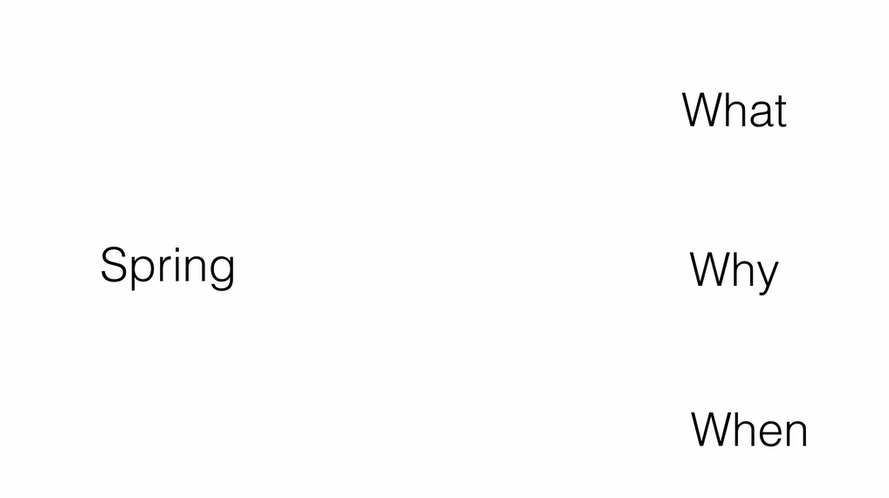
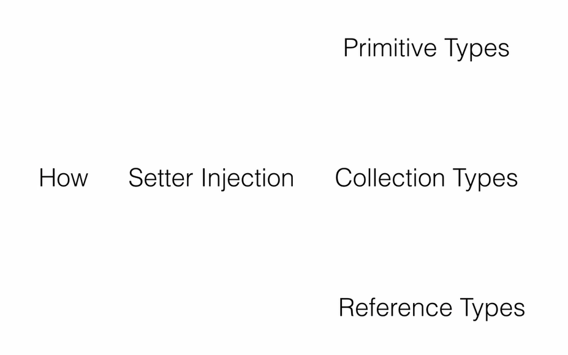
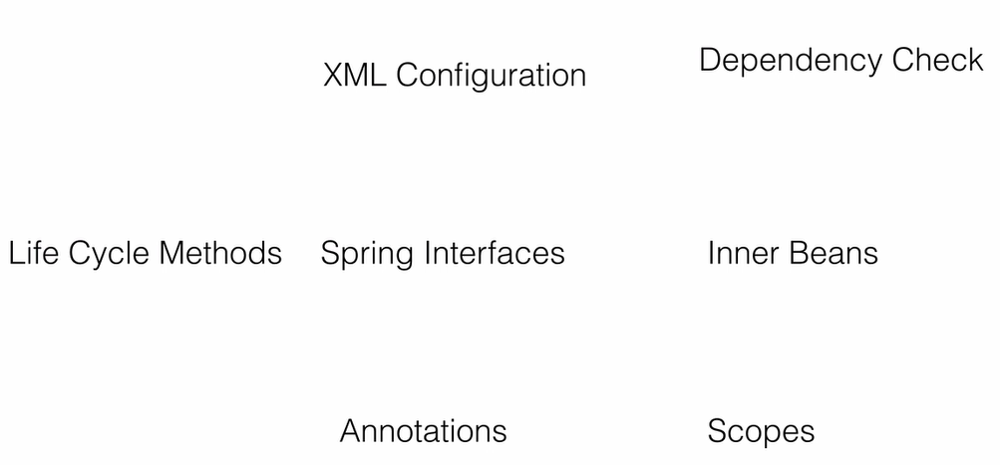
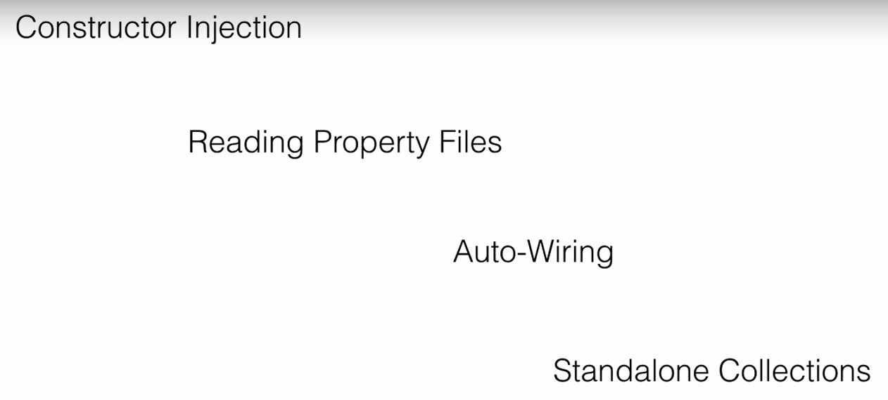
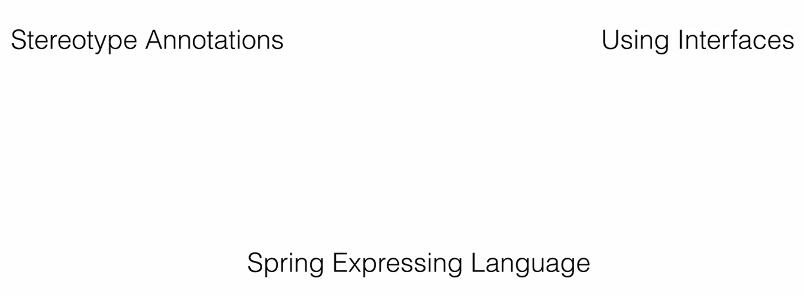
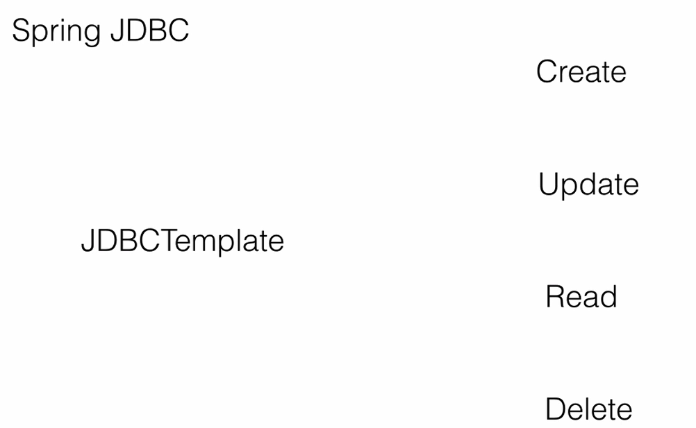
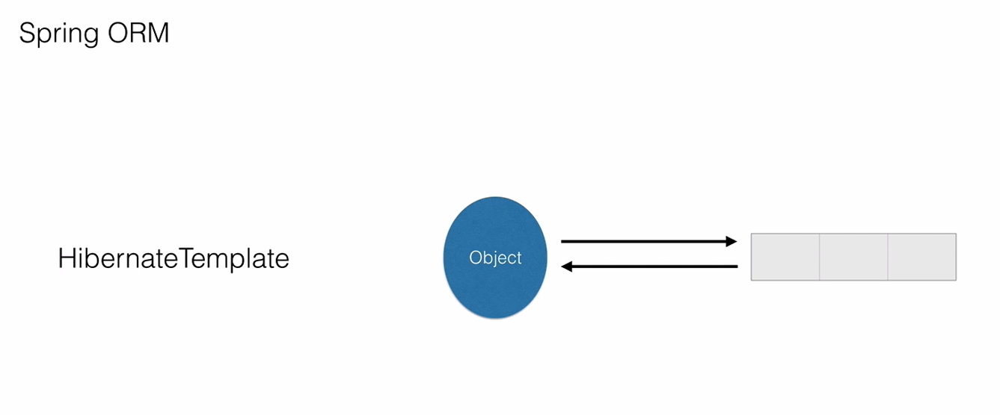
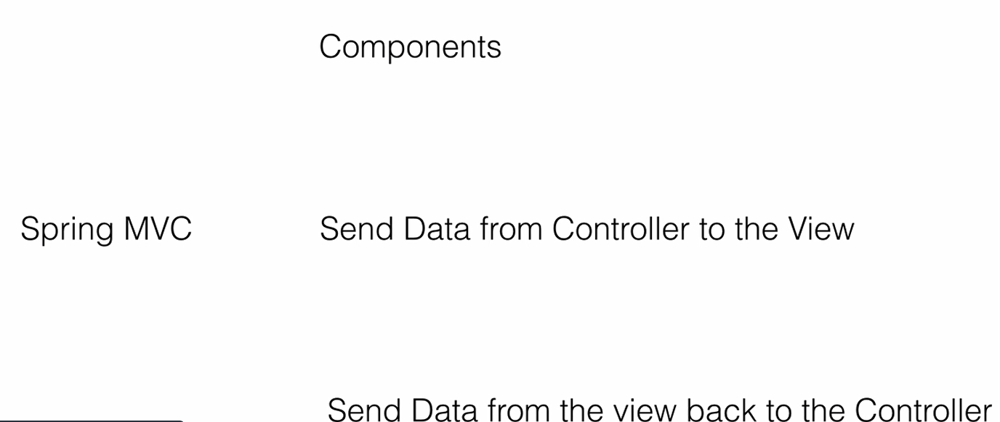
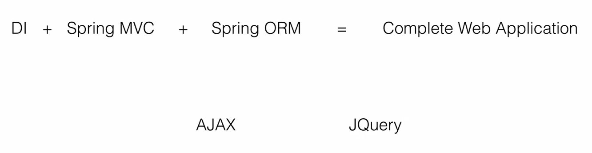
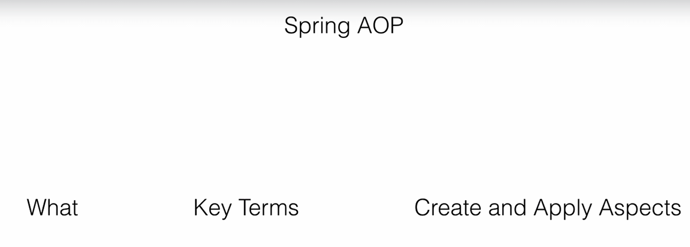

Overview :
This spring tutorial provides in-depth concepts of Spring Framework with simplified examples.
It was developed by Rod Johnson in 2003. Spring framework makes the easy development of JavaEE application.
It is helpful for beginners and experienced persons.
Spring Framework
Spring is a lightweight framework. It can be thought of as a framework of frameworks because it provides support to various frameworks such as Struts, Hibernate, Tapestry, EJB, JSF, etc. The framework, in broader sense, can be defined as a structure where we find solution of the various technical problems.
The Spring framework comprises several modules such as IOC, AOP, DAO, Context, ORM, WEB MVC etc. We will learn these modules in next page. Let's understand the IOC and Dependency Injection first.
The Spring Framework is a mature, powerful and highly flexible framework focused on building web applications in Java.
One of the core benefits of Spring is that it takes care of most of the low-level aspects of building the application to allow us to actually focus on
features and business logic.
Another strong point is that, while the framework is quite mature and well-established,
it's very actively maintained and has a thriving dev community.
This makes it quite up to date and aligned with the Java ecosystem right now.
Of course, there's a lot to learn to work well with Spring.
Let's get started.
And I'll be doing my best to help you make the maximum out of this course,
by learning

1) what Spring is,
2) why it is so popular in the Java EE application development world,
3) when to use it and you will also master all the important concepts such as dependency injection,
inversion of control,
4)what a Spring container is, etc;
You'll then move on to see

Dependency injection in action by injecting primitive types,
collection types as well as object or reference types.
The Spring container maintains the complete lifecycle of an object.

You will learn what that lifecycle is and how to use the three different ways to configure these lifecycle methods,
that is using XML configuration, Spring interfaces, as well as using annotations.
You will then use the dependency check to ensure that all the dependencies that we want
are being injected by Spring or provided at runtime. You'll define objects inside objects, that is, inner beans.
Spring creates objects based on their scope that we provide.
You'll try out the different scopes that Spring offers and those we can configure.
Based on the scopes Spring will create the objects at runtime.
Once you learn Setter injection,

using Constructor injection is very straight-forward.
You'll do that in simple steps. Instead of hardcoding values in real time applications,
we use property files. You will learn how to read and use those properties in Spring beans.
Auto-wiring is a very powerful feature where Spring does all the dependency injection automatically.
You will master auto-wiring and use it across the projects throughout the course.
You will then learn how to reuse the collection types by using Standalone collections.
A second way to create objects in Spring is by using annotations.

You will learn all the stereotype annotations and also how to enable them.
Spring expression language provides a very easy syntax.
You will learn what expression language is and how to use it.
You will wrap up the Spring course section by using interfaces and their implementations for dependency injection.
You will see runtime polymorphism and runtime injection in action.
You will then move on to

the Spring JDBC module
which abstracts the JDBC API and makes it very easy for a developer to perform the CURD or CRUD operations, that is,
Create, Update, Read and Delete operations against a database.
ORM stands for object relational mapping.

It converts a Java object into a database row and vice-versa.
You will use Spring with hibernate and see how it makes the life of a developer very easy.
It integrates very well with hibernate and in very simple steps we can do ORM, Object Relational Mapping.
Spring MVC is a complete implementation of the MVC pattern and can be used to develop web applications end to end.

You'll learn the various components that make up a Spring MVC application and the connection between them.
You will send the data from the controller to the UI and also from the view back to the controller.
You will then use your Spring dependency injection skills, Spring MVC skills as well as the ORM skills

and build a complete dynamic web application end to end. And in the process you will also learn,
briefly learn AJAX and make AJAX calls using JQuery. AJAX is a part of all the modern web applications.
Look at any web application and you will see a AJAX call.
So you are going to learn how to do that using JQuery.
AOP which stands for Aspect Oriented Programming allows us

to add external services
to our business methods without modifying the code. So you are going to learn what AOP is,
the key terminology in AOP and also create your own aspects and apply them.
Just like my other courses, this course is going to be Agile and an incremental course.
I'll be adding several other modules in Spring on a continuous basis.